개관
미래 데이터의 중요성
4차 산업혁명의 ‘원유’
- 다양한 소스들로부터 데이터 생성: 전지구적 개인과 환경에 대한 상세한 정보 발생
- 인터넷 & 통신 (SNS, 사진, 위치, 장소, 유동인구, 상품거래, 물류)
- 사물인터넷 (IoT), CCTV
- 스마트 팩토리, 파밍
- 게놈프로젝트, 생체정보, 의료/보건: 인류, 실시간
- 과학적 발견: 물리법칙의 발견, 약물의 합성, 생체 내 상호작용의 메커니즘 규명
- 자율주행차량: 내부, 외부
- 금융정보 및 흐름
- 사회 지표 활용: 고용, 직업, 연봉, 만족도 조사, 취약 계층, 우울
- 생성형 인공지능: 기계의 정보 생산
- AI companion: 개인 내면에 대한 정보
데이터 사이언스의 응용 사례
영업 및 마케팅
- 웹사이트에서 고객의 구매 행동, 소셜 미디어의 댓글을 추적 고객의 선호도를 파악
- 월마트의 경우,
- 수 십년 넘게 매장의 재고 수준을 최적화했고, 2004년, 몇 주 전에 발생한 허리케인의 판매 데이터를 분석하여 “딸기 팝타트”를 재입고
- 소셜 미디어 트렌드 및 신용카드 활동을 분석하여 신제품 출시 및 고객 경험 개인화/최적화
- 추천 시스템을 통해 사용자 취향에 맞는 제품을 추천, 틈새 상품의 판매도 촉진
공공기관
- 미국의 경우, 정부 주도의 데이터 과학 이니셔티브 발족; 특히, 보건 분야에 큰 투자
- Precision Medicine Initiative (2015)
- 인간 게놈 시퀀싱과 데이터 과학을 결합하여 개별 환자를 위한 약물을 설계
- 백만 명 이상의 자원봉사자로부터 환경, 라이프스타일, 생물학적 데이터를 수집하여 정밀 의학을 위한 세계 최대의 데이터를 구축
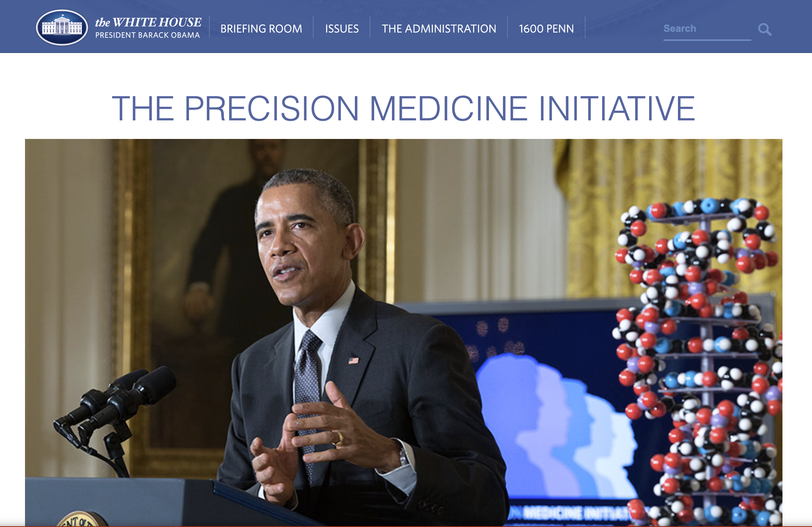
- Precision Medicine Initiative (2015)
- 도시 운영 및 설계
- 스마트 시티: 환경, 에너지, 교통 흐름을 추적, 분석, 제어
- 장기적 도시 계획 수립에 정보를 축적
- 치안 및 범죄 예측
- Police Data Initiative
- 범죄 다발 지역과 재범률을 예측
- 시민 단체들의 비판도 존재
- 시카고 경찰; 1주일 이내의 범죄 예측
- 비판: Event-level prediction of urban crime reveals a signature of enforcement bias in US cities. Nature human behaviour
- Police Data Initiative
- 각종 보험료 산정
- 과거의 데이터를 분석하여, 보험금을 지급할 확률을 계산하고 보험료를 산정
스포츠
- Moneyball: The Art of Winning an Unfair Game
- 야구에서 전통적으로 강조되던 도루, 타점, 타율의 통계보다 출루율과 장타율이 더 나은 척도였음
- “저평가된” 선수, 승리에 기여하는 능력에 비해 낮은 급여를 받는 선수를 찾아 영입
- Sabermetrics: sciecne of baseball
- 데이터 분석을 통해 시장에서 어떤 조직이 우위를 점할 수 있는 방법을 제시
- 적절한 속성을 찾는 것의 중요성
사회적 파장
유토피아 vs. 디스토피아
- 초연결성, 투명성 vs. 완전한 감시와 통제
- 개인화된 서비스 vs. 설득/유혹/조작
- 개별성/자율성 vs. 피동적/비주체적
- 기계와의 교감 vs. 인간관계의 소외, 현실과의 단절
- 정보와 인간에 대한 신뢰 vs. 사회적 연대, 문명 붕괴
- 자연과의 조화 vs. 생태계의 파괴


Yuval Noah Harari: An Urgent Warning They Hope You Ignore.
The Social Dilemma (2020)
Data Science
- Artificial intelligence (인공 지능)
- Machine learning (기계 학습)
- Deep learning (심층 학습)
- Data mining (데이터 마이닝)
- Statistical Learning (통계적 학습)
소프트웨어 개발
데이터에 기반한 분석 위해 작동하도록 프로그래밍을 하여 운영되도록 하는 일
주로 전통적인 컴퓨터 사이언스의 커리큘럼에 의해 트레이닝
- 유튜브의 영상 추천
- 페이스북의 친구 매칭
- 스팸메일 필터링
- 자율주행
데이터 분석
하나의 구체적인 질문에 답하고자 함
다양한 소스의 정제되는 않은 데이터를 통합하거나 가공하는 기술이 요구
- DNA의 분석을 통해 특정 질병의 발병 인자를 탐색
- 유동인구와 매출을 분석해 상권을 분석
- 어떤 정책의 유효성을 분석에 정책결정에 공헌
- 교통 흐름의 지연이 어떻게 발생하는지를 분석, 해결책 제시
Skills

- Domain knowledge
- 해결하려는 문제에 대한 이해없이 단순한 알고리즘만으로 “one size fits all”은 효과적이지 않음
- 추상화된 현실에 대한 모형은 수많은 가정/사전 지식(prior knowledge)을 전제하고 있음.
- 각 분야의 전문 지식은 데이터가 발생되는 과정, 데이터의 특성, 데이터의 의미를 이해하는데 필수적
- Ethics
- 데이터를 합법적이고 적절하게 사용하려면 규정을 이해하고, 자신의 업무에 미치는 영향과 사회에 미치는 파급력 대한 윤리적 이해가 필요
- 배출(exhaust) 데이터: 어떤 목적을 가진 데이터 수집 프로세스로부터 얻어진 부산물
- 소셜 미디어: 사용자가 다른 사람들과 소통할 수 있도록 도움
- 공유된 이미지, 블로그 게시물, 트윗, 좋아요 등으로부터
- 누가/얼마나 많이 보았는지/좋아요/리트윗을 했는지 등을 수집
- 아마존 웹사이트: 다양한 물건을 편리하게 구매할 수 있도록 도움
- 사용자가 장바구니에 어떤 품목을 담았는지, 사이트에 얼마나 오래 머물렀는지, 어떤 다른 품목을 보았는지 등을 수집
- 메타데이터(metadata)
- 통화 내역만으로 많은 민감한 정보을 유추할 수 있음
- 알코올 중독자 모임, 이혼 전문 변호사, 성병 전문 병원 등
- 소셜 미디어: 사용자가 다른 사람들과 소통할 수 있도록 도움
- 한편, 서비스와 마케팅을 타겟팅할 수 있는 잠재력
- 배출(exhaust) 데이터: 어떤 목적을 가진 데이터 수집 프로세스로부터 얻어진 부산물
- 데이터를 합법적이고 적절하게 사용하려면 규정을 이해하고, 자신의 업무에 미치는 영향과 사회에 미치는 파급력 대한 윤리적 이해가 필요
- Wrangling
- 데이터 소스는 다양한 형식으로 존재
- 통합, 정리, 변환, 정규화 등의 작업이 요구
- data munging, data wrangling, data cleaning, data preparation, data preprocessing 등으로 불림
- Database & computer science
- 수집된 데이터가 저장되고, 가공/추출된 데이터의 재저장 등 데이터베이스와의 소통할 수 있는 기술
- 다양해지고 방대해진 빅데이터를 저장/배포하기 위한 도구를 활용
- ML 모델을 이해하고 개발하여 제품의 출시, 분석, 백엔드 애플리케이션에 통합할 수 있는 기술 등
- Visualisation
- 작업 프로세스의 모든 과정에 관여
- 데이터를 탐색하거나,
- 데이터의 의미를 효과적으로 전달
- 작업 프로세스의 모든 과정에 관여
- Statistics & Probability
- 데이터 과학 프로세스 전반에 걸쳐 사용됨
- 초기 수집과 조사
- 다양한 모델과 분석의 결과를 해석
- 의사결정에 활용
- 데이터 과학 프로세스 전반에 걸쳐 사용됨
- Machine Learning
- 데이터로부터 패턴을 찾기 위한 다양한 알고리즘을 사용
- 응용 측면에서는
- 수많은 알고리즘에 대해 가정, 특성, 용도, 결과의 의미, 적용가능한 유형의 데이터 등
- 해결할 문제와 데이터에 가장 적합한 알고리즘을 파악
- Communication
- 데이터에 담긴 스토리를 효과적으로 전달하는 능력
- 분석을 통해 얻은 인사이트, 조직 내 목적에 어떻게 부합하는지, 조직의 기능에 미칠 수 있는 영향 등
응용/비즈니스에서 정형적인 절차
Phases of the CRISP-DM (CRoss-Industry Standard Process for Data Mining) 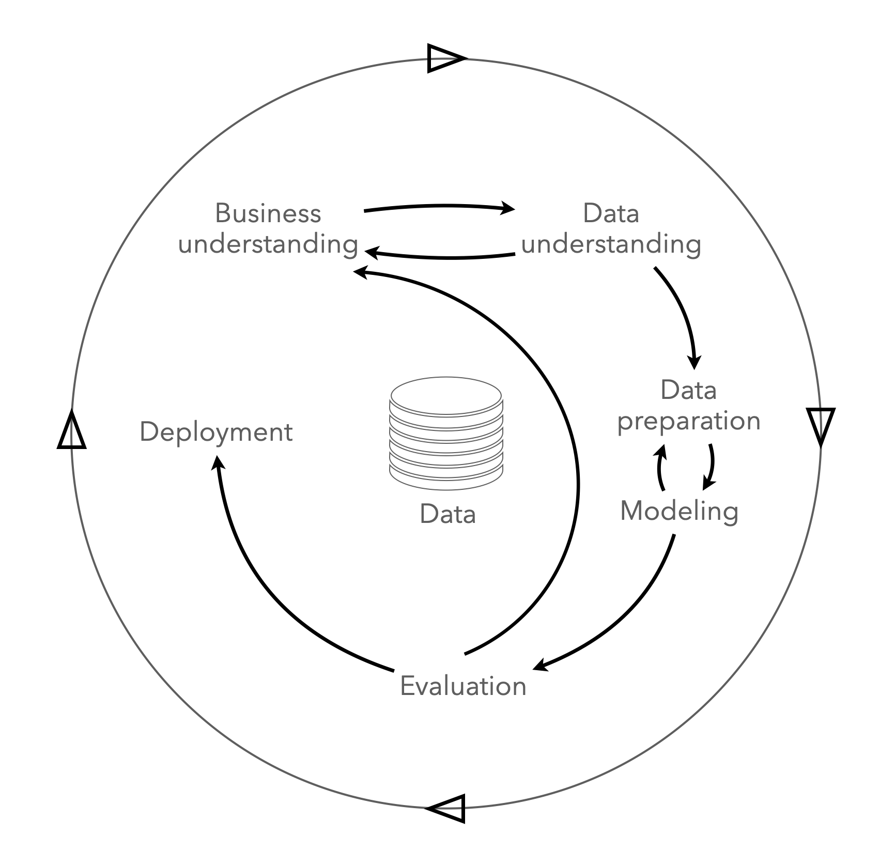
source: Chapman et al., 2000
{kind=link}
Generic tasks of the CRISP-DM reference model 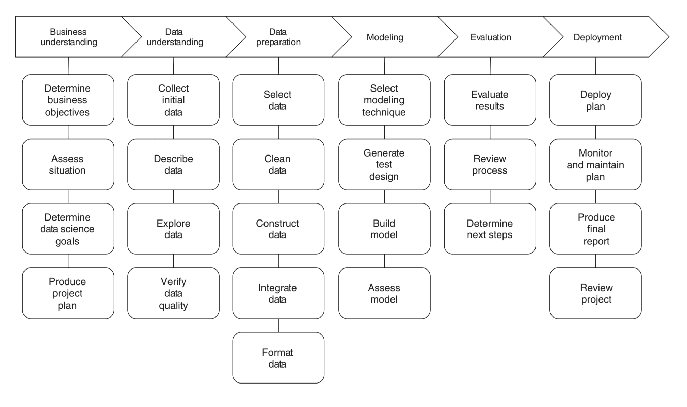
{kind=link}
비즈니스의 이해와 데이터의 이해
- 프로젝트의 목표를 정의하고, 비즈니스 문제를 이해하는 것
- 어떤 데이터를 수집하는 것이 유용한지, 어떤 데이터가 수집 가능한지 등을 탐색
데이터 준비와 모델링
- 노이즈와 비정형화된 데이터를 정제하고, 모델링을 위한 데이터를 준비
- 데이터로부터 의미있는 패턴(signal vs. noise)과 통찰을 찾기 위해 다양한 모델을 검토하고 실행
모델 평가와 배포
- 모델링 성능을 평가하고 개선, 모델을 배포
- 실제 환경에서는 훈련/평가을 위해 사용된 데이터가 보진 못한 새로운 데이터에 적용됨으로 모델의 성능을 지속적으로 모니터링
데이터 질의 중요성
- 2016년 데이터 과학자를 대상으로 한 설문조사(CrowdFlower report, 2016)
- 데이터 준비(데이터 수집, 클린닝)에 79%의 시간이 소요
- 프로젝트의 초점이 명확하고, 그에 맞는 올바른 데이터가 수집되었는지, 모델이 프로젝트의 목표에 잘 부응하는지 중요!
- Garbage in, garbage out
{kind=link}
{kind=link}
Source: Cleaning Big Data
표준 비즈니스 영역에서의 데이터 사이언스 작업
Source: Data Science (The MIT Press Essential Knowledge Series), 2018, by John D. Kelleher & Brendan Tierney
- Clustering
- Anomaly detection
- Association-rule mining
- Prediction: classification & regression
Clustering
Who Are Our Customers?
- 클러스터링을 통해 타깃 고객을 더 세분화된 군집으로 분류하여 마케팅 캠페인의 타겟을 명확히 정의할 수 있음
- Meta S. Brown (2014)의 보고서에 따르면,
- Soccer Moms?
- 어린이집에 다니는 어린 자녀를 둔 전업주부
- 고등학생 자녀와 함께 파트타임으로 일하는 엄마
- 음식과 건강에 관심이 많지만 자녀가 없는 여성
- Soccer Moms?
- Meta S. Brown (2014)의 보고서에 따르면,
- 클러스터링을 통해 얻은 고객 세그먼트에 페르소나를 부여
- 각 특성에 맞는 캠패인 전략을 수립
- 작고 집중된 고객 클러스터를 발견
- 많은 매출을 창출하는 고객이 포함된 클러스터에 집중
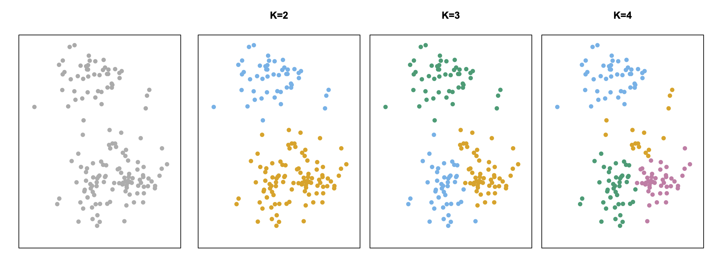
Source: Introduction to Statistical Learning by James et al.
- 클러스터링을 위해 사용할 수 있는 속성들: 어떤 속성을 포함하고 어떤 속성을 제외할지 결정하는 것이 중요!
- 인구통계학적 정보(연령, 성별 등)
- 위치(우편번호, 시골 또는 도시 주소 등)
- 거래 정보(예: 고객이 어떤 제품이나 서비스를 추구했는지)
- 기업이 고객으로부터 창출하는 수익
- 고객이 된 지 얼마나 되었는지
- 로열티 카드 회원인지
- 제품을 반품하거나 서비스에 대해 불만을 제기한 적이 있는지 등
{kind=link}
- 프로젝트의 데이터 이해 단계에서 탐색 도구로 자주 사용됨
- 추가 지원이 필요하거나 다른 학습 접근 방식을 선호하는 학생 그룹을 식별
- 생물 정보학에서 마이크로어레이 분석에서 유전자 서열을 분석
Anomaly detection
Is This Fraud?
- 잠재적인 사기, 특히 금융 거래 행위를 식별하고 조사
- 예를 들어, 비정상적인 위치에서 발생한 거래
- 비정상적으로 많은 금액이 포함된 거래
- 어떤 면에서 클러스터링과 반대 개념
- 클러스터링: 유사한 인스턴스 그룹을 식별
- 이상 징후 탐지: 특별한 인스턴스를 식별
- 이상 징후는 드물다는 그 고유한 특징으로 인해 식별이 어려움
- 여러 가지 모델을 결합: 서로 다른 모델이 서로 다른 유형의 이상 징후를 포착
- 예를 들어, 4개의 모델 중 3~4개 모델에서 거래가 사기성 거래로 식별되는 경우
- 다양한 분야에서 활용
- 금융기관: 잠재적 사기 또는 자금 세탁 사례로 추가 조사가 필요한 금융 거래를 식별
- 보험기관: 회사의 일반적인 청구와 일치하지 않는 청구를 식별
- 사이버 보안: 해킹 가능성, 직원의 비정상적인 행동을 탐지하여 네트워크 침입을 식별
- 의료 분야: 의료 기록의 이상 징후를 식별하여 질병을 진단
- 사물 인터넷: 데이터를 모니터링하고 비정상적인 센서 이벤트의 발생을 감지, 조치
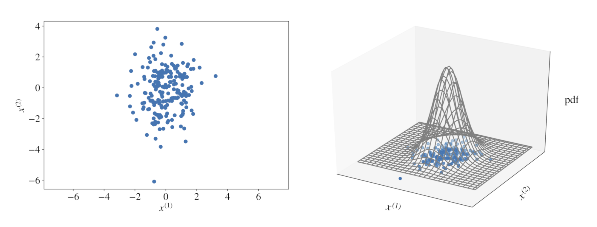
Source: The Hundred-Page Machine Learning Book, 2019 by Andriy Burkov
Association-Rule Mining
Do You Want Fries with That?
- 고객에게 다른 관련 제품이나 보완 제품, 혹은 잊어 있었던 제품을 제안
- 예를 들어, 슈퍼마켓에서 핫도그를 구매한 고객은 케첩과 맥주도 함께 구매할 가능성이 높음.
- 이에 맞춰 매장은 제품 레이아웃을 계획할 수 있음
- 온라인 마켓의 경우, 웹사이트의 배열, 추천, 광고 등을 설계
- 즉, 제품 간 연관성을 이해하고 교차 판매를 촉진
- 연관 규칙 마이닝은 데이터 세트의 속성(또는 열) 간의 관계를 살펴보는 데 중점을 둠: 속성 간의 상관관계
- 위의 경우, 고객의 장바구니 품목을 추적
- IF {핫도그, 케첩}, THEN {맥주}
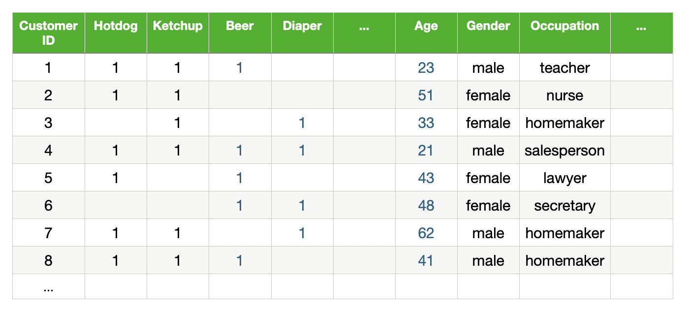
- 연관성 규칙의 신뢰도가 75%라면 고객이 핫도그와 케첩을 모두 구매한 경우 75%에서 맥주도 함께 구매했음을 의미
- 인구통계학적 정보를 연관성 분석에 포함하여 마케팅 및 타겟팅 광고에 활용
- 특히, 구매 기록 정보는 없는 경우
- IF 성별(남성) & 나이(35세 미만)& {핫도그, 케첩}, THEN {맥주}
- 장바구니 분석을 통해 다음과 같은 질문에 답을 탐색
- 마케팅 캠페인이 효과가 있었는지,
- 이 고객의 구매 패턴에 변화가 있었는지,
- 고객에게 중요한 인생 이벤트가 있었는지,
- 제품 위치가 구매 행동에 영향을 미치는지,
- 신제품으로 누구를 타깃팅해야 하는지 등
- 구매 경향의 시간적 요소를 더하면
- 적절한 시기에 (재)구매를 추천
- 유지보수, 부품 교체 일정
- 다양한 영역에서도 유용함
- 통신: 회사의 다양한 서비스를 패키지로 묶는 방법을 설계
- 보험: 상품과 보험금 청구 사이에 연관성을 파악
- 의료: 기존 치료법과 새로운 치료법 및 의약품 간에 상호 작용이 있는지 확인
- 추천 시스템(recommnder system)
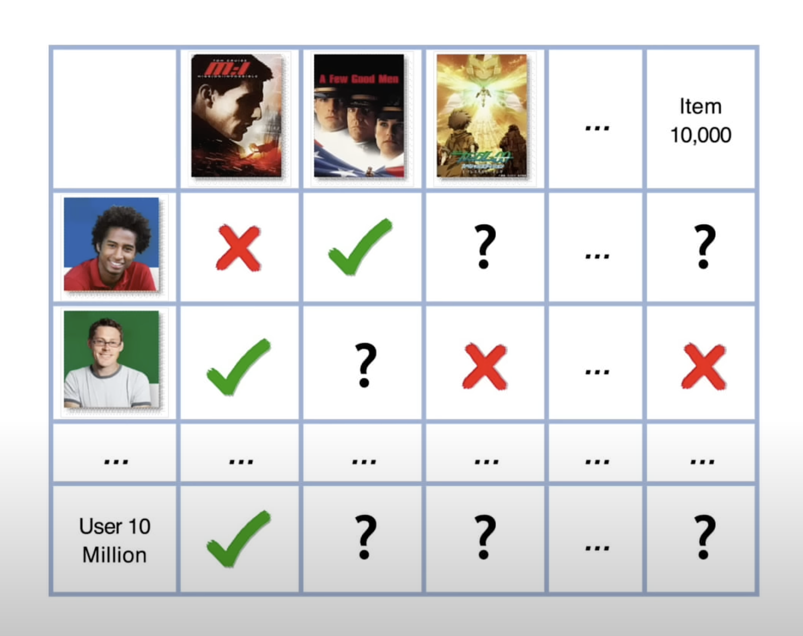

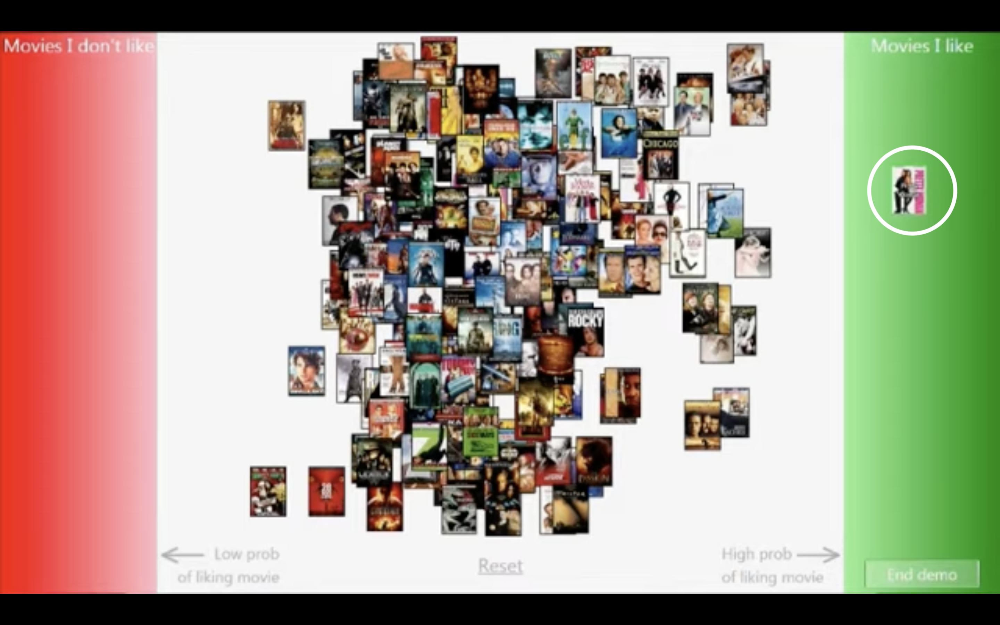
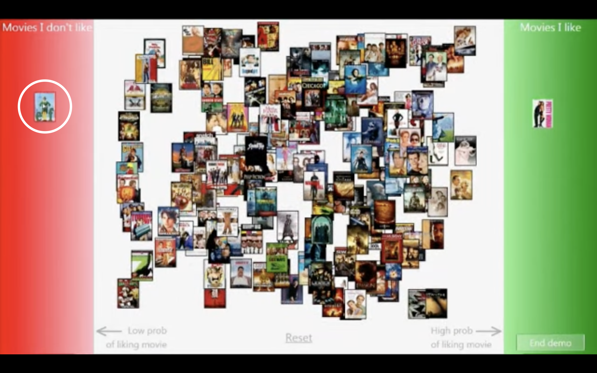
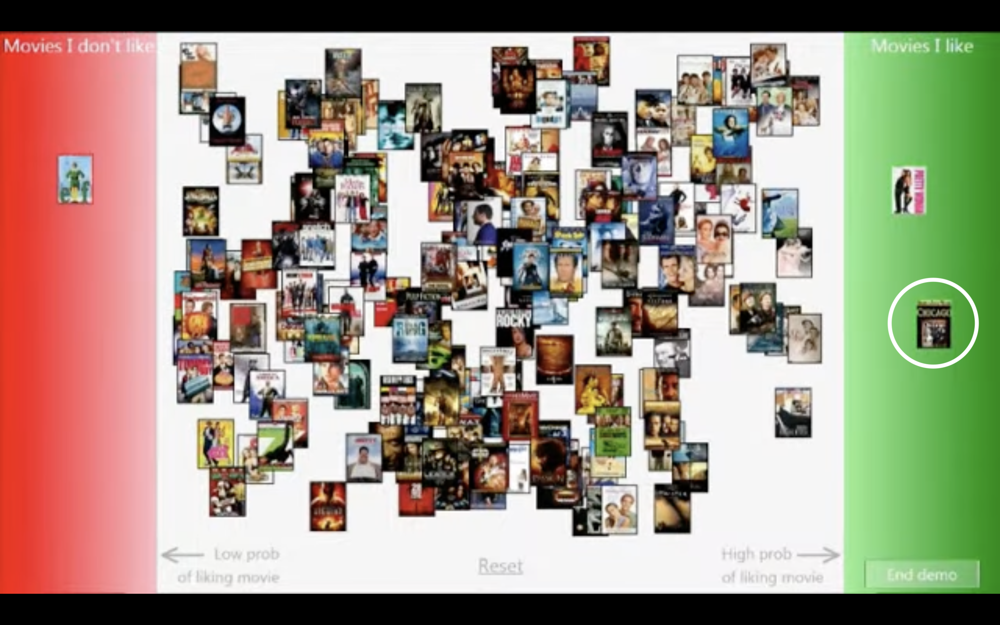
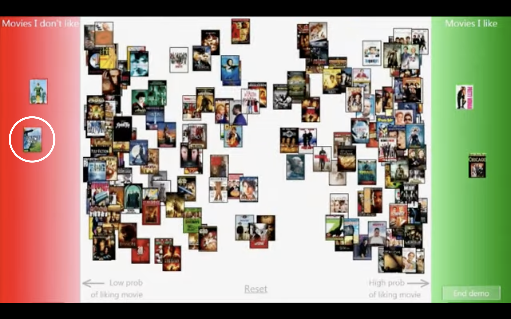
Source: Machine Learning Class (2016.7.8) from Microsoft Research by Chris Bishop, YouTube
Classification (Prediction)
Churn or No Churn(고객 이탈), That Is the Question
- 행동 성향 모델링의 목표: 마케팅 응답, 서비스 탈퇴 등 다양한 행동 예측
- 휴대폰 서비스 회사의 고객 유지 필요성: 신규 고객 유치 비용 대비 기존 고객 유지 비용의 상대적 높음
- 이탈 가능성이 높은 고객 식별의 중요성: 유지 비용 최소화 및 이탈 예측을 통한 효율적인 혜택 제공 필요
- 이탈 예측의 의미와 활용: 서비스 이탈 예측을 통해 고객 이탈 가능성을 예측하고 효율적인 대응 가능
- 다양한 산업의 이탈 예측 활용: 통신, 유틸리티, 은행, 보험 등에서의 이탈 예측을 통한 비즈니스 전략 개발 및 운영 향상
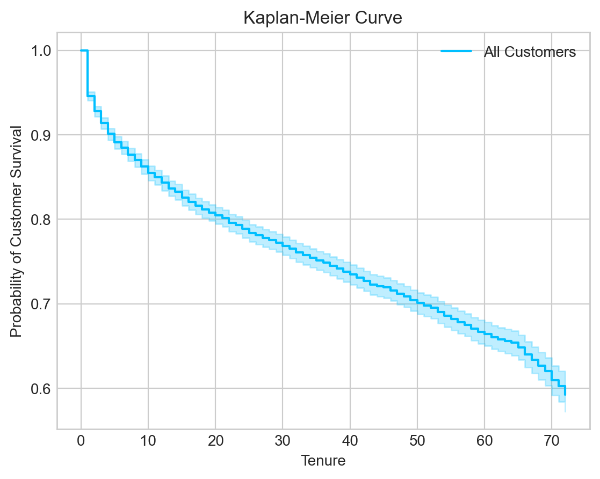
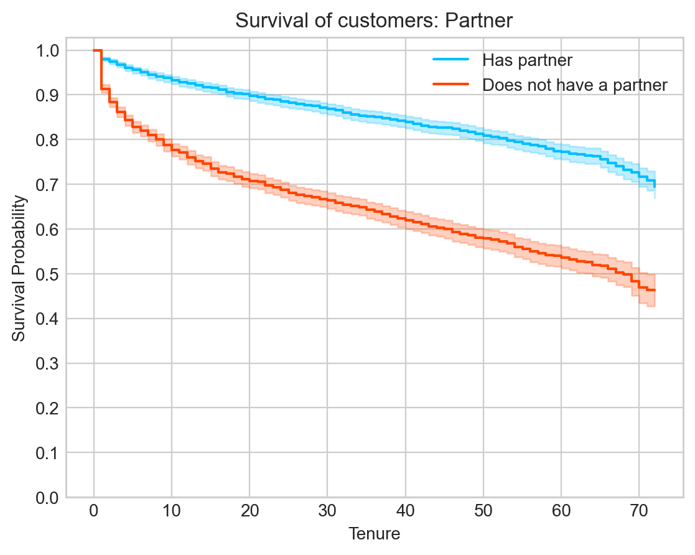
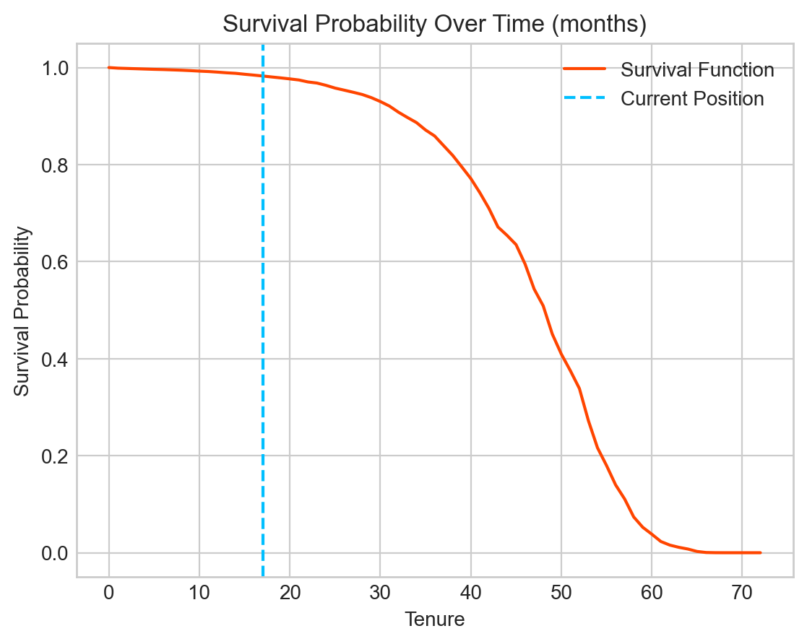
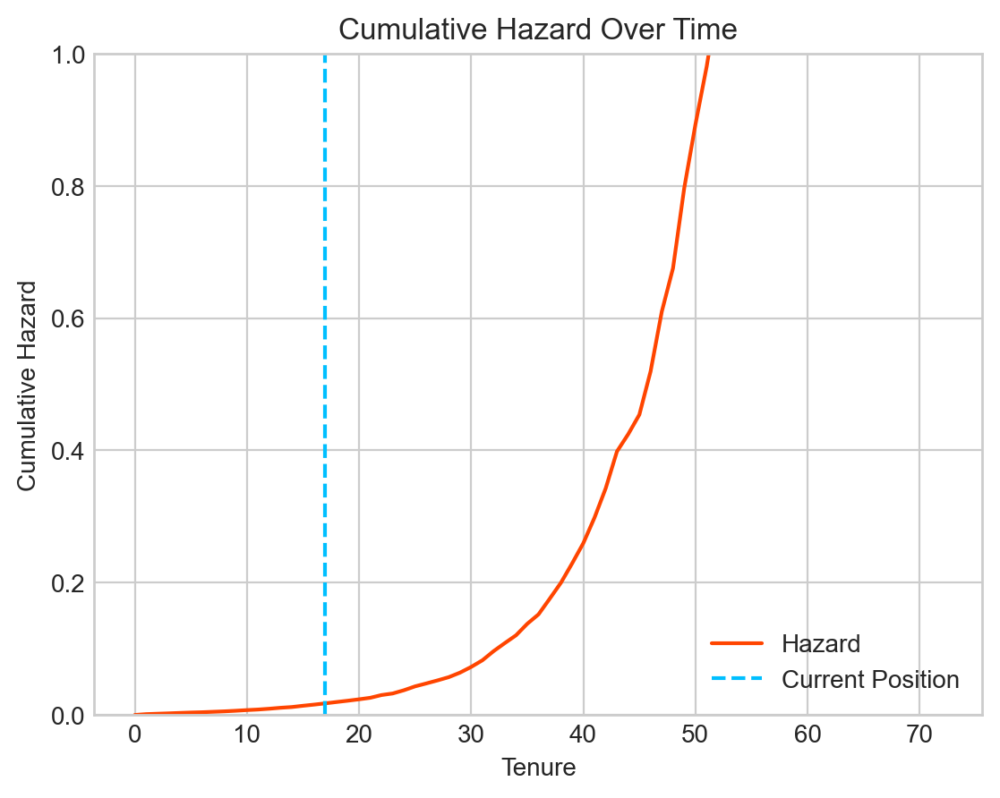
- 이해보다는 예측에 초점을 두는 deep learning
- Image recognition
- Speech recognition
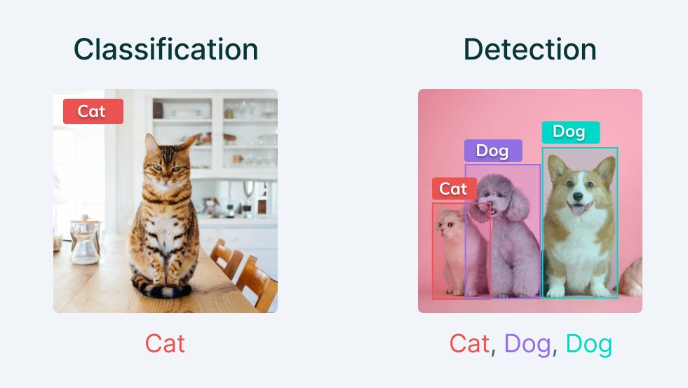
Regression (Prediction)
How Much Will It Cost?
- 앞서 분류는 범주형 속성의 값을 추정하는 반며, 회귀는 연속적인 값을 추정
- 전통적인 통계적 모형의 근간
- 예를 들어, 주택의 “가격”을 예측하는 경우
- 주택의 크기, 방의 개수, 층수, 해당 지역의 평균 주택 가격, 해당 지역의 평균 주택 크기 등의 속성을 포함
- 자동차의 “가격”을 예측하려며
- 자동차의 연식, 주행 거리, 엔진 크기, 자동차 제조사, 문 개수 등의 속성을 포함
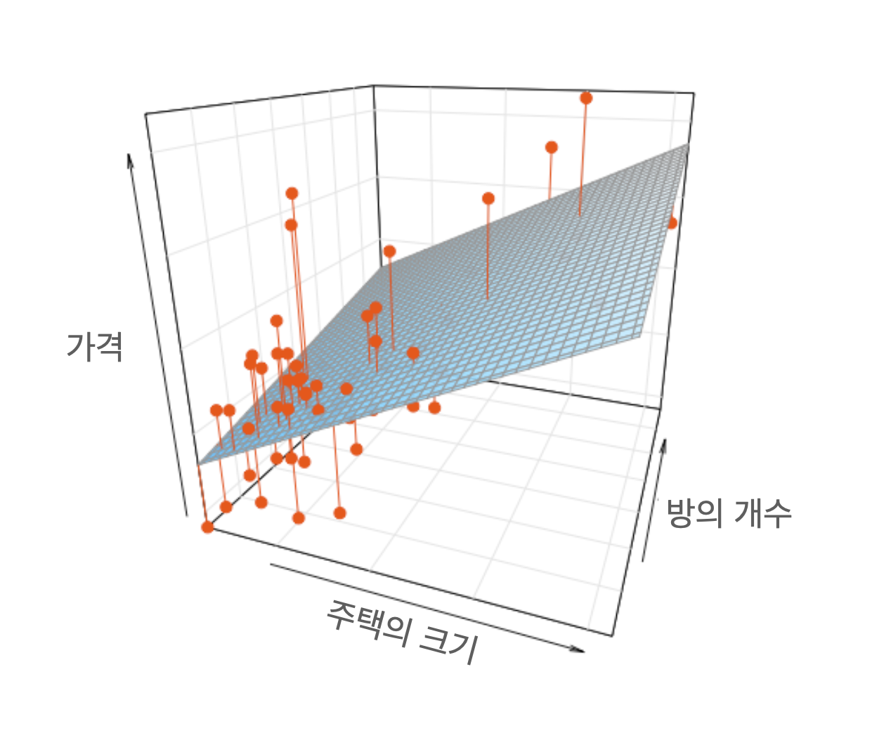